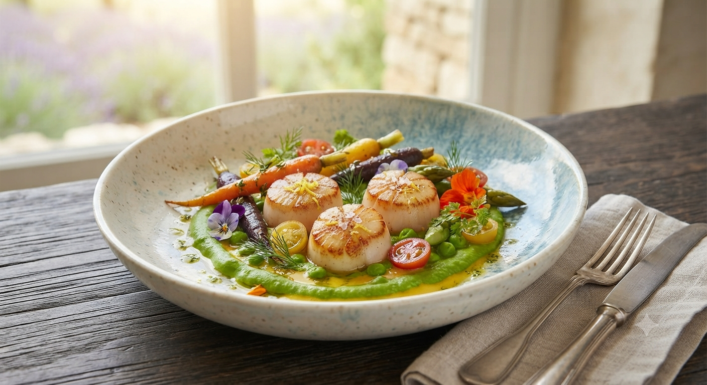
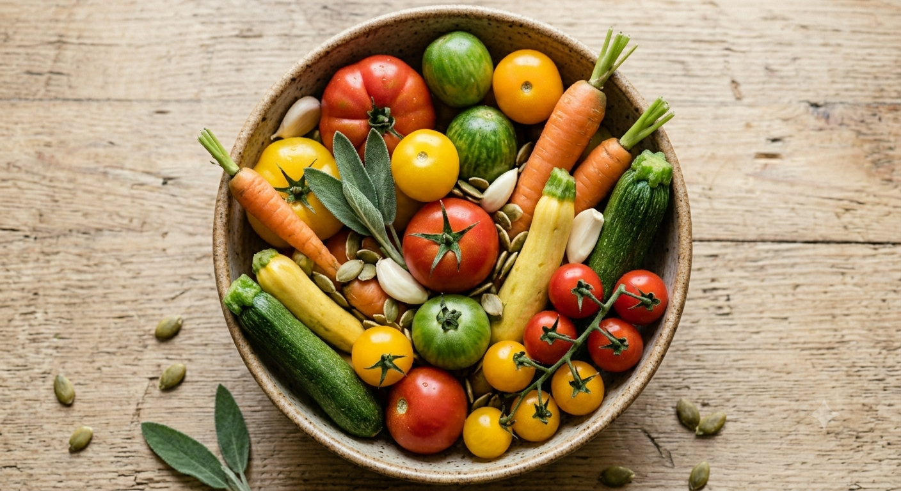
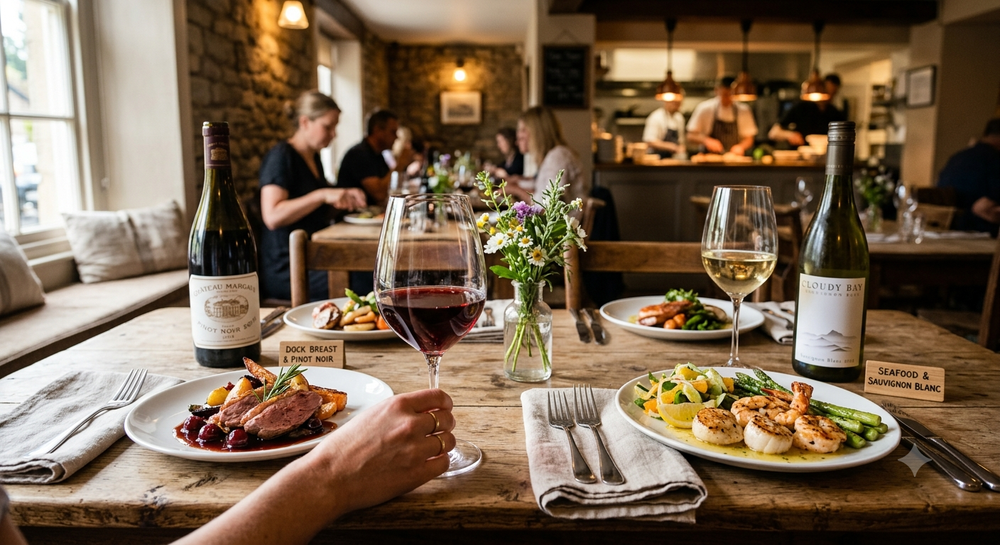
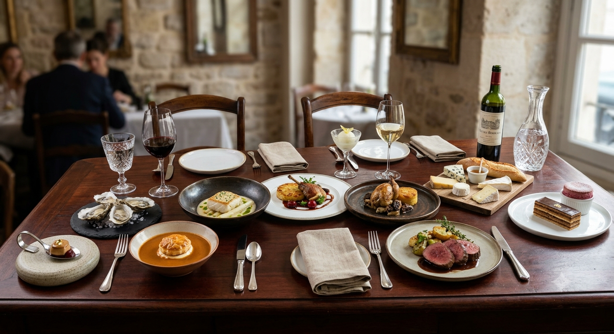
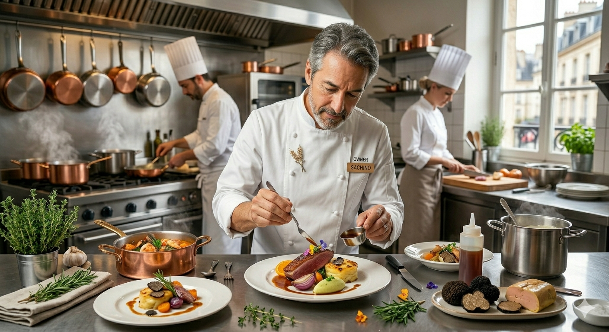
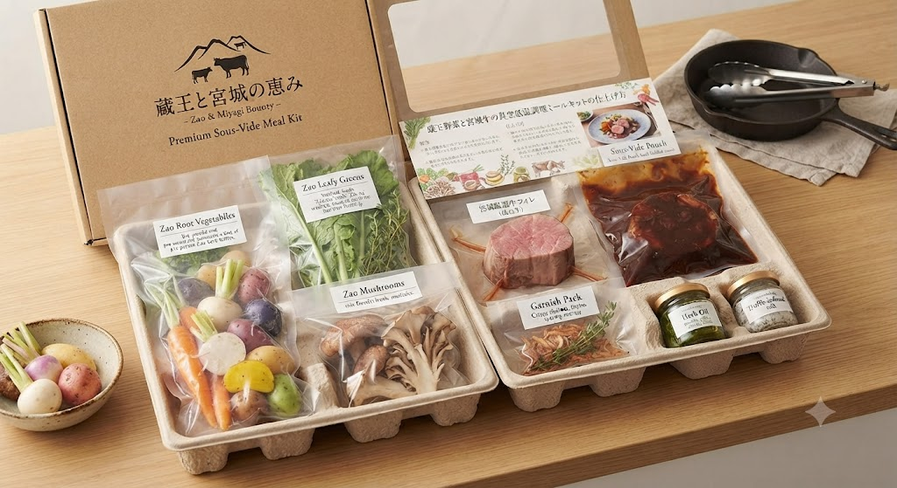

SENDAI ICHIBANCHO
地元の生産者様が丹精込めて育てた食材を主役に据えます。
蔵王の力強い野菜、女川の鮮烈な魚介、そして宮城が誇る短角牛。
オーナーソムリエが厳選したワインとのマリアージュとともに、ここでしか出会えない「美食の記憶」を紡ぎます。

シェフ自ら生地へ足を運び、目利きした蔵王野菜や三陸の魚介。生産者の想いまで料理に込めて。

オーナーソムリエが、料理一品ごとに寄り添う一杯をご提案。アルコールが苦手な方にはペアリング茶も。

シックで高級感のある店内は、デートや記念日、大切なビジネスシーンを静かに彩ります。

「ラペ」とはフランス語で「平和」を意味します。食卓を囲むひとときが、穏やかで幸福なものであるようにと。
東京の一流ホテルで7年、地元仙台で5年。30歳で独立し、この地で想いを一貫させてきました。それは「東北の食材のポテンシャルを、フレンチ料理という言語で表現すること」です。
オーナーシェフ / ソムリエ
泉田 智行

蔵王の豊かな野菜や宮城の厳選牛を真空低温調理。ご家庭で簡単な温めと盛り付けを行うだけで、まるでレストランの味を再現できます。
宮城県仙台市青葉区一番町3丁目7-1 電力ビル新館 B1F
広瀬通駅より徒歩5分
仙台駅より徒歩15分
Address
Sendai, Aoba-ku
Open
12:00 / 17:30
Station
Hirosedori 5min
Follow us
Restaurant LA PAIX